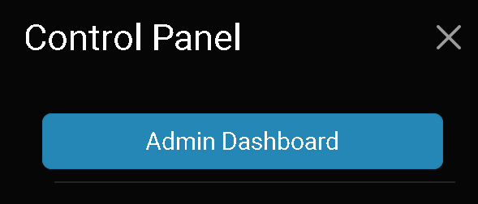
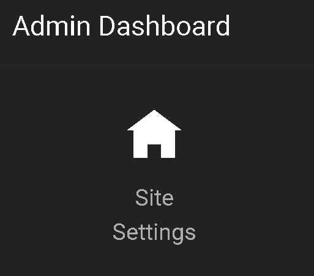
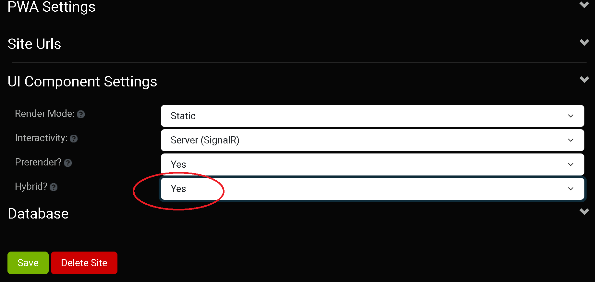
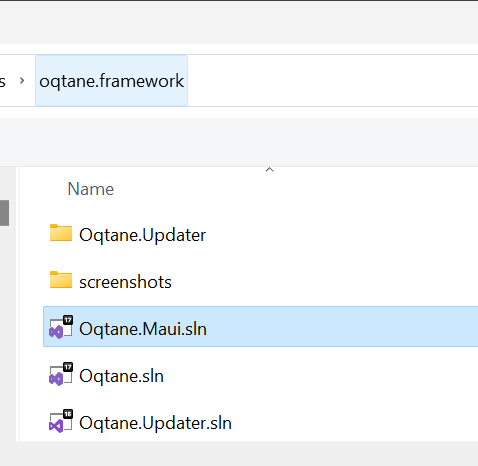
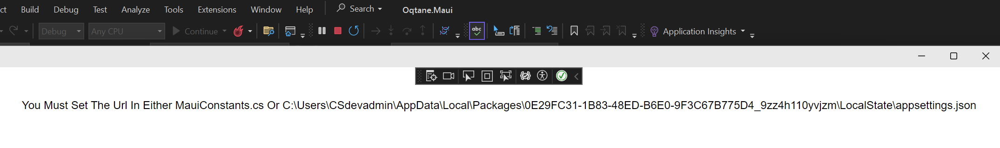
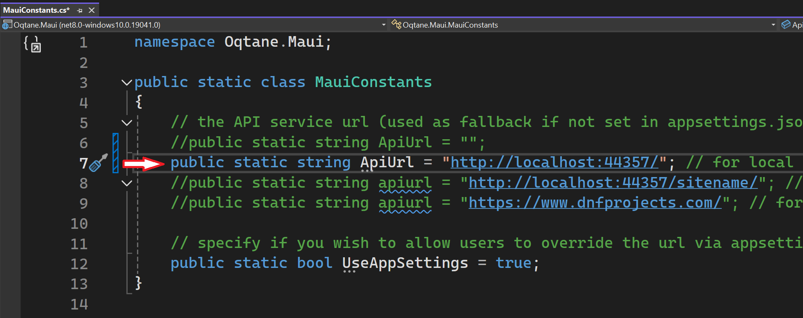
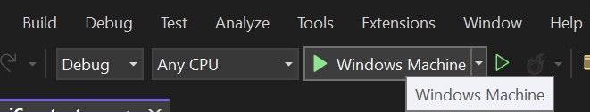
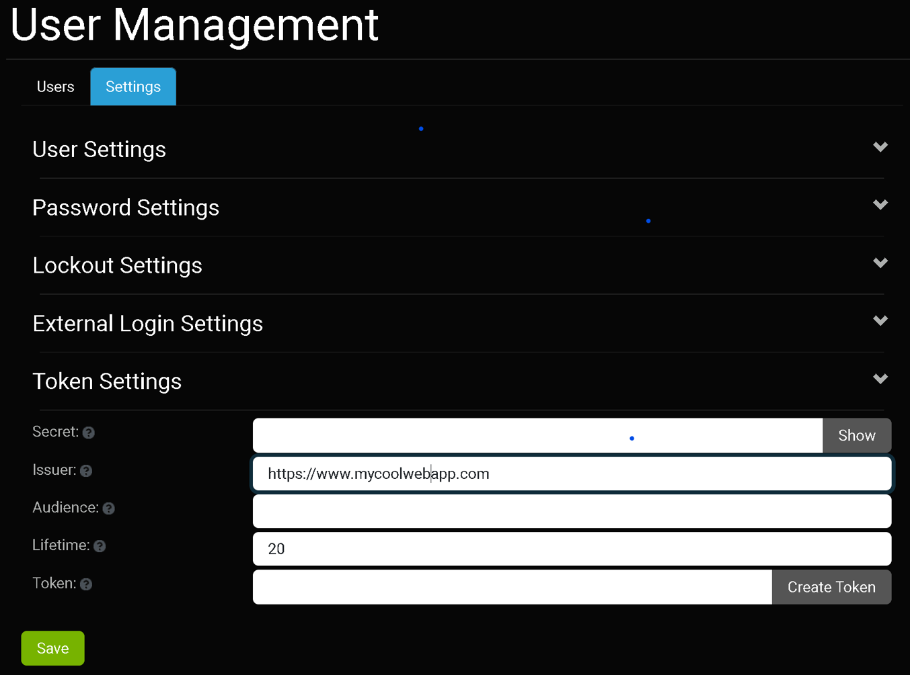

Setting Up Oqtane.Maui for Development with Visual Studio
Introduction
Oqtane.Maui is a hybrid .NET MAUI application that integrates with the Oqtane framework, allowing developers to create cross-platform applications with ease. This guide provides a step-by-step process to set up Oqtane.Maui for development using Visual Studio and .NET 8, specifically for Oqtane version 5.1.
Prerequisites
- Visual Studio installed and updated on your machine.
- Latest .NET 8 SDK installed.
- A database server installed on your machine or accessible from your network. You can use MySQL, PostgreSQL, SQLite, or SQL Server.
Step-by-Step Setup Guide
1. Install Oqtane
- Follow the official Oqtane getting started guide here.
- Ensure you have the required dependencies installed.
2. Configure Oqtane for Hybrid .NET MAUI
- Open the Oqtane Admin Dashboard.

- Navigate to Site Settings

- Navigate to UI Component Settings
- Set the option for Hybrid? to Yes.

3. Edit the MauiConstants.cs File (Option #1)
- Open your Oqtane.Maui project in Visual Studio. 
- Locate the
MauiConstants.csfile in your project directory.  - Modify the file to point to your Oqtane web application:
namespace Oqtane.Maui;
public static class MauiConstants
{
// the API service url (used as fallback if not set in appsettings.json)
public static string ApiUrl = "";
// public static string ApiUrl = "http://localhost:44357/"; // for local development (Oqtane.Server must be already running for MAUI client to connect)
//public static string apiurl = "http://localhost:44357/sitename/"; // local microsite example
//public static string apiurl = "https://www.dnfprojects.com/"; // for testing remote site
// specify if you wish to allow users to override the url via appsettings.json in the AppDataDirectory
public static bool UseAppSettings = true;
}
For local development you may set this as shown in the image below by commenting/uncommenting lines.

4. Modify appsettings.json (Option #2 Preferred)
The preferred way to configure the URL is through the appsettings.json file. Note that the Oqtane.Maui app supports an appsettings.json file located in the FileSystem.Current.AppDataDirectory. The first time you run the Oqtane.Maui app, it will look in that location for the appsettings.json file, and if it does not exist, it will create one and display a message in the UI:
This option allows you to modify the appsettings.json without having to change the MauiConstants.cs file and recompile the app (although that approach works as well).
5. Build and Deploy the Application
Open the Oqtane.Maui project in Visual Studio.
Build the application:
- Go to Build > Build Solution or press
Ctrl + Shift + B.
- Go to Build > Build Solution or press
Run/launch the application:
- Set the Oqtane.Maui project as the startup project.
- Press
F5to start debugging orCtrl + F5to run without debugging. - Alternatively, you can run the application by clicking on Windows Machine within Visual Studio.

- If you prefer, you can also find the application deployed on your Windows machine and run it from your desktop.
Additional Tips and Troubleshooting
- Ensure all dependencies are correctly installed.
- Oqtane Framework must be running on a seperate instance of Visual Studio or a web server.
- For additional user functionality like file uploads you may need to create a user token. This can be accomplished by navigating to Admin Dashboard > User Management > Token Settings and setting the *Secret: option. 
- For further assistance, refer to the Oqtane community discussion forums.
Conclusion
By following these steps, you should have a fully functional Oqtane.Maui setup for development with Visual Studio. If you encounter any issues or have suggestions for improving this guide, please contribute to the documentation.